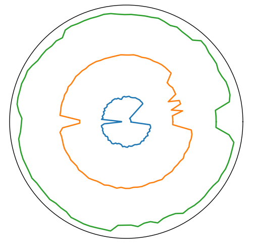
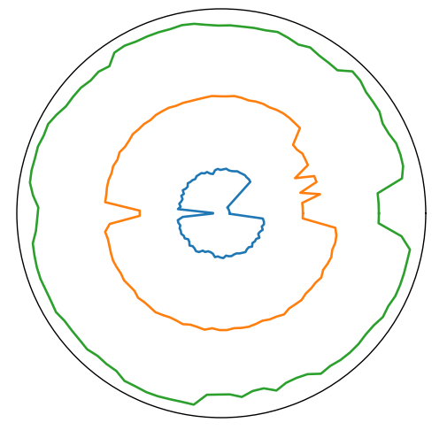

Software Design
Github repo: https://github.com/richardli03/record-music-visualizer.git
Dependencies: argparse, json, os, sys, matplotlib, numpy, pandas, librosa, pdb
Getting Frequencies from Song
Once loading the .wav file, we first turned the song into a series of samples using a linspace. Then, we separated it into all of its constituent frequencies by taking the Fast Fourier Transform. Although we originally wanted to use an intelligent audio processing library to do that, it ended up being much easier to (manually) take the FFT. We put all of the data into a Pandas Dataframe with samples (time) along the columns and the frequencies along the rows. The values go from 0 to -100, where 0 is the loudest and -100 means there’s none of that signal (it’s silent).
Splitting Frequencies and Computing Volumes
We wanted to get three frequency ranges—bass, mid, and treble. We first split the data in half, because the FFT gave us two sets of identical data (symmetric about 0). We then logarithmically split the frequencies into the three groups. Since we were trying to plot volume over time, we took a weighted average of all the frequency signals at a specific time sample to filter out noise (everything lower than -75) and weight real signals. That left us with a volume for each range at each time point we sampled.

The Record Player Visual
Since we wanted our visualizer to invoke a record player, we made our visualizations round, like a record. We found the deviation of each point from the average of the category, which we used as a zero point. Once we set each category to have a different baseline radius, we were able to plot the changes in volume on a polar graph to get our first visualizations.
 

Packaging A CSV
At that point we had the positions we wanted each pen to be at different angles on the circle, which correspond to different points in time. We wanted to package that in a format that the firmware team could use. We decided to make a CSV that held the motor position, in the form of positive or negative inches away from the baseline radius for each pen, versus the angle the disk was at. We decided to do it this way because then we could separate the two parts of the flow a little bit and easily intercept it while doing integration.

Oscillations
A significant amount of thought went into trying to make the visualizations meaningful. At the core of this project, we were trying to convert one form of art into another in a way that still invoked the feelings from the first. At the point we were at, the visualizations were not super interesting. We decided to add in oscillations, because music is often represented in waves and it’s much more dynamic. It brings the feeling of the music much more.
To create the oscillations, we created a point between every two data points we had and defined a baseline oscillation size. If the data points were within some margin of 0, the new points would oscillate at the baseline size (around 0.2 inches). Any changes from there would be plotted as a larger spike or as a lack of oscillation. This process did indeed make the visualizations much more interesting and artistic.

Fine Tuning
We wanted to optimize the visualization a bit more. There was an unexpected spike at the beginning and end of the song that was weighing out any other changes in volume over the course of the song. We determined that this was because the beginning and end of a song are quiet, and because the difference there is much larger than the variation in other parts of the song, so you could only see that. We trimmed the beginning and end of the song to solve that. We also did some scaling to make the variations we wanted to see bigger while also leaving enough space between the rings for the pens to not collide. We found that the rate at which we sampled the song had a huge impact on the visual and its quality, so that also took a bit of fine-tuning, which ended up being different for every song.
Here are some of the final visuals we got: